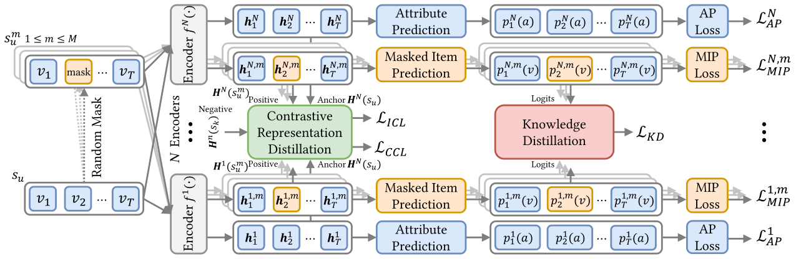

Ensemble Modeling with Contrastive Knowledge Distillation for Sequential Recommendation (面向序列推荐的对比知识蒸馏集成建模)
- 会议/期刊: SIGIR 2023
- 作者与机构: Hanwen Du, Huanhuan Yuan, Pengpeng Zhao, Fuzhen Zhuang, Guanfeng Liu, Lei Zhao, Victor S. Sheng（苏州大学、北京航空航天大学、麦考瑞大学、德州理工大学）
- 推荐链路定位: 召回（序列编码器 / Next-Item 预测）
- 研究方向: 序列与会话推荐 / 自监督对比学习与交互去噪
- 论文原文: https://arxiv.org/abs/2304.14668v3
- 开源代码: https://github.com/hw-du/EMKD
TL;DR (1分钟核心速览)
现有序列推荐几乎都在"设计更强单一序列编码器"上内卷，而简单并行多网络集成因缺少网络间知识迁移，增益常不稳定。本文提出 EMKD：以 \(N\) 个并行双向 Transformer 为编码器集成，在表征层用 ICL（网内）+ CCL（跨网）对比蒸馏、在 logits 层用对称 KL 协同蒸馏打通知识流，并以掩码物品预测为主任务、属性预测为辅助任务。在 5-core 过滤、Leave-One-Out 划分、全库未采样排序协议下，Beauty/Toys/ML-1M 的 NDCG@10 相对最佳基线提升 20.74%~33.48%。
Background & Motivation (背景与核心矛盾)
- 主流范式: 以 RNN/CNN/单向或双向 Transformer 作为单一序列编码器（GRU4Rec、Caser、SASRec、BERT4Rec），再叠加属性融合（FDSA、S3-Rec、MMInfoRec）或对比学习正则（CL4SRec、DuoRec）来刻画用户动态兴趣。
- 前人局限: (1) 单一深网只能收敛到某一局部极小，不同初始化网络预测分布各异却无法互相借力——文中 Table 1 显示独立训练的 2× 集成虽有效，但 GRU4Rec 在 Toys 上仅 0.0097→0.0102，增益脆弱；(2) 靠堆叠层数扩容量无效，SASRec 10 层 NDCG@10 0.0282 反低于 2 层 0.0284。
- 核心洞察 (Key Insight): 参数越多局部极小数目指数增长，不同种子初始化的网络几乎不可能收敛到同一极小，因此预测具备天然多样性；"每个网络都猜不准，但对多个分布投票/互蒸馏即可命中"，同时协同蒸馏可过滤噪声标签引入的错误预测。
- 本文切入点: 把 CV 中的协同蒸馏（DML/ONE）+ 对比表征蒸馏迁移到序列推荐，让 \(N\) 个网络既做 teacher 又做 student。
Method (核心方法设计)
1. 整体框架 (Overall Architecture)
输入用户序列 \(s_u\)，先用不同随机种子初始化的\(N\)个双向 Transformer 编码器\(f_1,\dots,f_N\)并行编码；对每条序列采样\(M\)个不同掩码序列\(s^m_u\)。原始序列的隐表示\(\boldsymbol{H}^n(s_u)\)作为对比蒸馏的 anchor 并送入属性预测头；掩码序列的隐表示\(\boldsymbol{H}^n(s^m_u)\)作为正样本并送入掩码物品预测头；同 batch 其他用户序列经同一网络编码作为负样本。训练时联合优化主任务 CE、属性 BCE、ICL/CCL 与 logits KL；推理时把 [mask] 追加到序列尾，将\(N\) 个网络对 mask 位置的 logits 取平均作为最终打分。
flowchart TD
A["用户序列 s_u + M 个掩码序列"] --> B["N 个并行双向 Transformer 编码器"]
B --> C["掩码物品预测 (主任务 CE)"]
B --> D["属性预测 (辅助 BCE)"]
B --> E["ICL / CCL 表征对比蒸馏"]
B --> F["logits 级对称 KL 协同蒸馏"]
C --> G["N 路 logits 平均 → Next-Item 排序"]
F --> G
2. 关键设计拆解 (Key Designs)
-
双视角对比表征蒸馏 (ICL + CCL)：仅做网内对比（如 CL4SRec）只是正则化，无法跨网络迁移。ICL 以同一网络的原序列表示为 anchor、其掩码序列表示为正样本： \(\mathcal{L}^{\text{ICL}}_n=-\sum_{m=1}^{M}\log\frac{\exp(g(\boldsymbol{H}^n(s_u),\boldsymbol{H}^n(s^m_u))/\tau)}{\sum_{k\neq u}\exp(g(\boldsymbol{H}^n(s_u),\boldsymbol{H}^n(s_k))/\tau)}\)CCL 则把 anchor 换成网络\(x\)、正样本换成另一网络\(y\) 的掩码表示\(\boldsymbol{H}^y(s^m_u)\)，并对所有有序网络对\((x,y),x\neq y\) 求和。直觉：跨网络拉近"同一序列的不同视角表示"，等价于让弱网络对齐强网络的表征几何，比 logits 蒸馏更细粒度。
-
logits 级对称协同知识蒸馏 (KD)：表征对齐与排序目标仍有 gap，故在温度 \(\tau\)的 softmax 分布\(z\) 上最小化 KL： \(\mathcal{L}^{\text{KD}}=\sum_{x=1}^{N}\sum_{y\neq x}\sum_{m=1}^{M}\sum_{t\in\mathcal{I}^m_u}\sum_{i=1}^{|\mathcal{V}|}z^{x,m}_t(v_i)\log\frac{z^{x,m}_t(v_i)}{z^{y,m}_t(v_i)}\)关键细节：作 teacher 时对\(z^{x}\)截断梯度以保证稳定；且不做单向强弱指定，每个网络同时充当两者，使\(N\) 个视角的信息被对称地广播，避免单向蒸馏中的"教师误导向"。
-
属性预测辅助任务与训练目标：不构造显式属性 embedding（缓解属性 ID 稀疏），而是用 sigmoid 线性头把位置隐表示直接映射到 \(|\mathcal{A}|\) 维做多标签 BCE，为序列注入品类/品牌/题材上下文。总损失 \(\mathcal{L}_{\text{EMKD}}=\mathcal{L}_{\text{MIP}}+\mathcal{L}_{\text{AP}}+\lambda(\mathcal{L}_{\text{ICL}}+\mathcal{L}_{\text{CCL}})+\mu\mathcal{L}_{\text{KD}}\)负样本全部来自 in-batch 其他用户序列（免额外采样器），掩码比例\(\rho=0.15\)，默认\(N=3\)、\(M\in[1,8]\)、\(d=256\)。推理需\(N\)次前向（约\(N\times\) 参数与算力）。
Experimental Setup & Evaluation Protocol (实验设置与评估协议)
- 数据集与预处理: 全部按 5-core 过滤（用户/物品交互数 \(<5\) 剔除），去重并按时间戳排序。
| 数据集 | #Users | #Items | #Interactions | 稀疏度 | 特征/场景说明 |
|---|---|---|---|---|---|
| Beauty | 22,363 | 12,101 | 198,502 | 99.93% | Amazon 美妆；细粒度品类 + 品牌共 1,221 属性 |
| Toys | 19,412 | 11,924 | 167,597 | 99.93% | Amazon 玩具；1,027 属性 |
| ML-1M | 6,040 | 3,953 | 1,000,209 | 95.81% | 电影；18 个题材属性，序列长（人均 163.5） |
- 数据划分与防穿越:
Leave-One-Out——最后一条测试、倒数第二条验证、其余训练；显式评分统一视为隐式反馈。 - 排名评测协议: 无偏 Full-Ranking（全库未交互物品排序，不做负采样），指标 HR@\(\{5,10\}\)、NDCG@\(\{5,10\}\)，遵循 [21] 对采样指标不公平性的告诫。
- 对比基线与超参: 三组基线——通用序列（GRU4Rec/Caser/SASRec/BERT4Rec）、属性感知（FDSA/S3-Rec/MMInfoRec）、对比学习（CL4SRec/DuoRec）；\(d=256\)、2 层 Transformer、2 头、batch 256、Adam lr=1e-3、250 epoch 取验证最优；\(\lambda,\mu\in[0.01,1]\)、\(\tau\in[0.1,10]\) 网格调参；论文未报告显著性检验。
Key Experimental Results (实验关键数据)
1. 主实验对比 (Main Results)
| Dataset | Metric | GRU4Rec | Caser | SASRec | BERT4Rec | S3-Rec | MMInfoRec | CL4SRec | DuoRec | EMKD | Improv. |
|---|---|---|---|---|---|---|---|---|---|---|---|
| Beauty | HR@10 | 0.0332 | 0.0436 | 0.0592 | 0.0583 | 0.0634 | 0.0739 | 0.0630 | 0.0867 | 0.0995 | +14.76% |
| Beauty | NDCG@10 | 0.0175 | 0.0212 | 0.0284 | 0.0307 | 0.0335 | 0.0445 | 0.0307 | 0.0430 | 0.0594 | +33.48% |
| Toys | HR@10 | 0.0184 | 0.0333 | 0.0652 | 0.0524 | 0.0705 | 0.0818 | 0.0736 | 0.0744 | 0.1016 | +24.21% |
| Toys | NDCG@10 | 0.0097 | 0.0168 | 0.0320 | 0.0309 | 0.0369 | 0.0484 | 0.0339 | 0.0406 | 0.0622 | +28.51% |
| ML-1M | HR@10 | 0.1344 | 0.1442 | 0.1810 | 0.2219 | 0.1969 | 0.2248 | 0.1815 | 0.2865 | 0.3239 | +13.05% |
| ML-1M | NDCG@10 | 0.0649 | 0.0734 | 0.0918 | 0.1097 | 0.0950 | 0.1203 | 0.0920 | 0.1586 | 0.1915 | +20.74% |
2. 消融实验 (Ablation Study)
| 变体 (NDCG@10) | Beauty | Toys | ML-1M |
|---|---|---|---|
| (1) EMKD (×3, 默认) | 0.0594 | 0.0622 | 0.1915 |
| (2) w/o ICL | 0.0529 | 0.0545 | 0.1679 |
| (3) w/o CCL | 0.0552 | 0.0560 | 0.1807 |
| (4) w/o KD | 0.0537 | 0.0571 | 0.1758 |
| (5) 独立训练（无任何迁移） | 0.0452 | 0.0484 | 0.1476 |
| (6) 单编码器 | 0.0363 | 0.0375 | 0.1183 |
| (7) EMKD (×2) | 0.0536 | 0.0568 | 0.1792 |
| (8) EMKD (×4) | 0.0591 | 0.0629 | 0.1930 |
| (9) w/o 属性预测 AP | 0.0578 | 0.0609 | 0.1831 |
3. 关键实验发现 (Key Findings)
- 增益主要来自"迁移"而非"堆参数"：Beauty 上单网络 0.0363 → 朴素 3× 集成 0.0452（+24.5%）→ 加入蒸馏后 0.0594（相对集成再 +31.4%）；参数对照实验更直接：EMKD(×3) 14.05M 参数得 0.0594，而同等 14.12M 的 10 层 BERT4Rec 仅 0.0319，几乎翻倍，说明收益源于 ICL/CCL/KD 的协同机制而非容量扩张。
- 三个蒸馏目标互补且缺一不可：移除 ICL 掉幅最大（Beauty 0.0594→0.0529，-10.9%），其次 KD（→0.0537）与 CCL（→0.0552）；跨网络 CCL 与网内 ICL 的差距表明"只做自监督增广"不足以在集成间传递知识。属性预测虽是辅助任务，去掉仍使 ML-1M 从 0.1915 降至 0.1831。
- 边际收益在 \(N\)与\(M\)上均快速饱和：\(N=3\)→\(N=4\)仅 Toys +0.0007、ML-1M +0.0015，Beauty 反降 0.0003（过拟合风险）；掩码序列数\(M\)增大持续有效但很快触顶，\(\tau\) 需取中间值（过小分布过硬、过大过软）。效率上 EMKD(×2) 69.4 s/epoch 与 MMInfoRec 65.3 s 相当，EMKD(×3) 109.2 s（约慢 30%），收敛速度与 DuoRec 持平但后期仍持续提升。
Highlights & Limitations (亮点、对比与审稿批判)
- 与代表作对比 (vs. Prior Work): 与 BERT4Rec 相比，本文不改编码器内部结构，而是把"容量"花在 \(N\) 个独立初始化网络上并强制互蒸馏；与 CL4SRec/DuoRec 相比，对比学习在此不再是纯正则，而是 anchor 与正样本跨网络的表征蒸馏通道（CCL）+ logits 协同 KL，使对比信号具备"网络间"方向性；与 CV 的 DML/ONE 相比，首次将协同蒸馏适配到序列推荐的掩码预测任务，且教师/学生完全对称。
- 可迁移亮点: (1) "anchor 取原序列、正样本取另一网络的增广视图"的跨网络对比写法，可零成本套用到图推荐 / 多模态推荐的任意多分支架构；(2) 属性预测不建属性 embedding、直接用隐表示做多标签 BCE，是缓解属性稀疏的轻量技巧；(3) 用"同参数量的深层单模型"作为对照来论证增益来源，是集成类论文值得借鉴的审稿防御实验。
- 审稿级局限批判: (1) 成本：\(N=3\)带来约 3× 参数（14.05M vs SASRec 4.69M）与 30% 训练开销，线上需\(N\)次前向，论文未给单塔蒸馏或参数共享的压缩方案；(2) 评估局限：仅 3 个公开集 + Leave-One-Out 单点测试，无重复实验/显著性检验，也缺少无属性（纯 ID）数据集与线上 A/B，属性预测的适用边界不明；超参\(\lambda,\mu,\tau\) 均呈明显倒 U 型，调参成本与鲁棒性未量化。
Rating (四维评分)
- 方法创新性 (Novelty): ⭐⭐⭐⭐ （首次把并行集成 + 双层对比知识蒸馏引入序列推荐；机制新颖，但各组件在 CV/DML 与 CL4SRec 中均有原型，属组合式创新）
- 评估协议与实验扎实度 (Protocol & Experiments): ⭐⭐⭐⭐ （5-core + Leave-One-Out + Full-Ranking 无偏排序规范，9 个基线覆盖三类范式，含参数量对照与效率分析；扣分于无显著性检验、仅 3 数据集）
- 写作与数学规范度 (Clarity & Rigor): ⭐⭐⭐⭐ （ICL/CCL/KD 三式定义清晰、teacher 梯度截断等实现细节交代到位；但集成与蒸馏的符号略拥挤，缺复杂度分析）
- 工业落地与复现价值 (Industrial & Practical Value): ⭐⭐⭐ （代码开源、可直接插拔提升 GRU4Rec/Caser/SASRec/BERT4Rec；但 \(N\times\) 参数与推理前向次数在低延迟召回场景代价明显，需蒸馏压缩后才易上线）